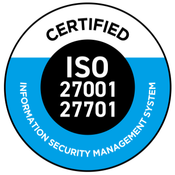

<div class="wrapper wrapper-content animated fadeInRight ng-scope">
    <div class="row">
        <div class="col-lg-6 animated fadeInLeft">
            <div class="row">
                <div class="col-lg-12">
                    <div class="ibox float-e-margins">
                        <div class="ibox-title m-b-n">
                            <h3 class="ng-binding"><i class="fa fa-smile-o"></i> Olá Davi Wollmann!</h3>
                        </div>
                        <div class="ibox-content">
                            <h5>QUEM SOMOS</h5>
                            <p>A eBox é uma empresa que realiza a guarda e gestão de documentos digitais e físicos com
                                alta tecnologia para pequenas, médias e grandes empresas.</p>
                            <hr>
                            <h5>NOSSA MISSÃO</h5>
                            <p>Oferecer soluções de Gestão Documental física e digital, com inovação, rigor técnico e
                                excelência na prestação de serviços para nossos clientes.</p>
                            <hr>
                            <h5>NOSSA VISÃO</h5>
                            <p>Ser uma empresa inovadora e flexível em gestão documental, com excelência em tecnologia e
                                processos, obter profundo conhecimento das atividades dos nossos clientes e setores em
                                que atuam, bem como ser um dos líderes do mercado de gestão documental física e digital
                                no Brasil.</p>
                            <hr>
                            <h5>NOSSOS VALORES</h5>
                            <ul>
                                <li>Foco no Cliente</li>
                                <li>Atitude de Dono</li>
                                <li>Excelência</li>
                                <li>Compromisso com o Resultado</li>
                                <li>Ética e Credibilidade</li>
                                <li>Trabalho em Equipe</li>
                                <li>Inovação</li>
                                <li>Sustentabilidade</li>
                            </ul>
                        </div>
                    </div>
                </div>
            </div>
            <div class="row">
                <div class="col-lg-12">
                    <div class="ibox float-e-margins">
                        <div class="ibox-title m-b-n">
                            <h3><i class="fa fa-bullseye"></i> Certificação ISO 27001/27701</h3>
                        </div>
                        <div class="ibox-content">
                            <h5>O QUE É A ISO 27001/27701?</h5>
                            <div class="clearfix m-b-sm"> 
                                <p>A ISO/IEC 27001 é a norma internacional de gestão de segurança da informação. Ela
                                    descreve como colocar em prática um sistema de gestão de segurança da informação
                                    avaliado e certificado de forma independente. Isso permite que você proteja todos os
                                    dados financeiros e confidenciais de maneira mais eficiente, minimizando a
                                    probabilidade de serem acessados ilegalmente ou sem permissão.</p>
                                <p>A ISO/IEC 27701 – é uma extensão da ISO/IEC 27001, e tem como objetivo adicionar
                                    novos controles no sistema de gestão de segurança da informação, visando garantir a
                                    total privacidade dos dados pessoais.</p>
                            </div>
                            <div class="gray-dashed-area">
                                <h4>Somos certificados!</h4>
                                <p>Após rigorosa auditoria realizada pela QMS Certification Services, recebemos os
                                    Certificados ISO 27001:2013 e ISO 27701:2019. Este é um grande avanço para toda a
                                    empresa e é fruto do trabalho de cada um de vocês!</p>
                                <p>Parabéns a todos!</p>
                                <p><a href="#" data-toggle="modal" data-target="#modalISO27001">Clique aqui e veja o
                                        certificado da ISO 27001:2013 na íntegra</a></p>
                                <p><a href="#" data-toggle="modal" data-target="#modalISO27701">Clique aqui e veja o
                                        certificado da ISO 27701:2019 na íntegra</a></p>
                            </div>
                        </div>
                    </div>
                </div>
            </div>
        </div>
    </div>
</div>